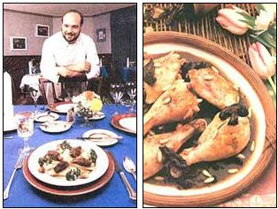

The flavors of wild mushrooms speak poetry in gourmet dishes in the world's best restaurants. You can match this mastery in your own kitchen.
EXCERPTED FROMJOE'S BOOK OF MUSHROOM COOKERY BY JACK CZARNECKI.USED WITH PERMISSION OF ANTHENEUM PUBLISHERS.
To mushroom fanciers, Joe's Restaurant, in Reading, Pennsylvania, is as alluring and replete with gastronomic promise as a morel nestled on the forest floor. Joe's is the country's premier specialist in wild-mushroom dining; for decades, customers and food critics have hailed it as one of the finest and most innovative restaurants in the nation. Here you'll encounter such delicacies as Morels Marie (morels stuffed with pheasant mousse), Snails Suillus pictus with a mustard and caper sauce, Crusted Beef in Black Trumpet Sauce, and the more basic but legendary Joe's Wild Mushroom Soup. Here, too, you'll find Jack Czarnecki, third generation chef and proprietor of Joe's, author of Joe's Book of Mushroom Cookery, and one of the country's foremost experts on finding, preparing, preserving, and serving fungi.
Jack's knowledge of mushrooms is a legacy from his grandparents, who learned to gather mushrooms in Poland and later taught their son (Jack's father) how to do the same in the Blue Mountains near Reading. Now Jack and his entire family-his mother and father, his wife, Heidi, and his three children-hunt mushrooms every day during the season, sometimes bringing back as many as 20 or 30 different kinds for the restaurant's larder.
But Jack is quick to point out that, although identifying and picking edible wild mushrooms is best left to those with experience, wild-mushroom cookery can be explored by anyone. Fresh wild mushrooms are now available (in season) at markets in many areas...and some "wild" species such as shiitake, oyster mushrooms, and enoki, are cultivated on mushroom "farms." Wild mushrooms are also available canned or dried. (Dried mushrooms are preferable to canned for culinary purposes, says Jack, and for some species-such as the cep-they're superior even to fresh specimens in some recipes.) And don't judge the commercial button mushroom, Agaricus brunnescens, too harshly, he says; it is, after all, what most of us think of when we think mushroom, and is perfectly acceptable for many dishes.
In Joe's Book of Mushroom Cookery ($20.95, Atheneum), Jack explains how to choose, prepare, can, and dry mushrooms, as well as how to make everything from basic stocks and extracts to entrees that marry mushrooms with poultry, fish, pasta, and eggs. Here is just a sampling of the many fine recipes to be savored from Joe's Book of Mushroom Cookery.
Use this recipe for any mushrooms, domestic or wild. It is an excellent way of preparing domestic mushrooms and is also very good as a side dish for a main meal. But it can also be the entree of a dinner, especially when the mushrooms used are extra special. Serve it in shells of puff pastry.
• 4 tablespoons melted butter
• 1/2 cup chopped or sliced onions or scallions
• 1/2 cup water, or veal or poultry stock
• 8 ounces fresh mushrooms, sliced or whole
• 1 teaspoon salt
• 1 teaspoon sugar
• 1 tablespoon soy sauce
• 1/2 teaspoon dried savory, or 1 tablespoon fresh chopped savory
• 2 tablespoons cornstarch mixed with 1/3 cup water
Put the butter in a saucepan, and melt over low heat. Add the onions or scallions, and sauté over medium heat until they are almost transparent. Douse them with the water or stock, and bring to a simmer.
Add the mushrooms, and cover the pan with a tight lid. Reduce the heat to low and let simmer for 1/2 hour, at the end of which they should be greatly reduced in size.
Add the salt, sugar, and soy sauce, and stir gently. Continue to simmer for 5 minutes, then add the savory.
Thicken with the cornstarch-and-water mixture, adding a little at time. Serve over heated pastry shells. Serves 4.
Any kind of mushroom can be used here, but the complexity and interest of the dish will increase with the wilder types. The onion, that constant and faithful sidekick of the mushroom, is again an indispensable part of this preparation. Simply serve with toast points or croissants.
• 1/3 cup chopped onions
• 1 1/2 tablespoons melted butter
• 1 cup chopped mushrooms
• 1/8 teaspoon salt
• 1/8teaspoon sugar
• 1/4 teaspoon soy sauce
• 8 eggs
Sauté the onions in the butter until they are just transparent.
Add the mushrooms and the rest of the ingredients except the eggs, and continue to cook until most of the moisture has evaporated, about 10 minutes.
Beat the eggs lightly and add to the sauteed mixture. Stir the mixture until the eggs are not quite completely cooked, then take off the heat. Continue stirring the eggs until the heat from the bottom of the pan has finished cooking them. Offer with toast. Serves 4.
This is a very straightforward dish made magnificent by the addition of Boletus edulis (ceps). Accompany with mashed potatoes, and Cabernet Sauvignon Blanc or any white Bordeaux.
• 1/4 cup vegetable oil
• Thighs and drumsticks (separated from each other) from two 5-pound chickens
• 1 medium onion, sliced thin
• 2 cups water
• 1 ounce dried ceps
• 1 teaspoon sugar
• 1 teaspoon salt
• 1 tablespoon soy sauce
• 1 tablespoon cornstarch mixed with 1/3 cup water
• 1 small clove garlic, crushed
• 1/3 cup pine nuts
Place a heavy skillet over a medium flame, and heat for 1 minute.
Add the vegetable oil, and heat for 1 minute.
When the oil is heated, add chicken pieces, and brown them on each side for about 1 minute per side. Make sure that the chicken is slightly browned before removing from the pan. You may have to do this operation twice if all the chicken pieces do not fit into the pan in the first browning. If this becomes necessary, use more vegetable oil as needed.
Remove chicken from pan, and place on a plate that has been covered with a paper towel to absorb any excess fat or oil. Reduce heat to low flame.
Drain all but 1 tablespoon of oil and fat remaining in pan. Scrape any hardened fat or grease out of the pan, and discard. Make sure to retain 1 tablespoon of liquid in pan.
Add onions, and sauté in the fat-oil for 1 minute. Add water, ceps, sugar, salt, and soy sauce and bring to a boil. Reduce quickly to a simmer, and allow to simmer for 15 minutes, uncovered. While stirring, slowly add the cornstarch-and-water mixture to thicken. Add crushed garlic and pine nuts. Add chicken, and resume simmering. Cover, and let simmer for about 20 to 30 minutes, or until the chicken is done. Stir occasionally to prevent any of the solids from sticking to the skillet. Remove chicken from skillet, place on a serving dish, and cover with the ceps and remaining liquid. Correct for salt if necessary. Serves 4.
This side dish goes best with game birds. It can also be used to stuff small birds like quail. Just be sure to close the open end of the bird.
• 1 cup raw wild rice
• Water to cover
• 3 cups water
• 1 teaspoon salt
• 1/3 cup chopped onions
• 3 tablespoons butter
• 1 1/2 cups fresh chanterelles, sliced,
• or 1/2 cup canned chanterelles, drained and sliced
• 2 tablespoons chopped dried apricots
• 1/2 teaspoon salt
Wash the rice, then cover with water; soak for 30 minutes. Drain off water, and rinse in cold water.
Bring the 3 cups water, salt, and butter to boil in a saucepan. Add rice. Cover and cook until rice grains are just tender, about 30 minutes. Pour off water. Keep rice warm.
When rice is about half-cooked, sauté the onions in 2 tablespoons of butter, until they just turn transparent.
Add the chanterelles and apricots, and continue to sauté for another 2 minutes.
Add the salt and the remaining butter, and stir-fry for 1 minute.
Stir in the wild rice, and blend until the rice is warmed and well mixed with the mushrooms and apricots. Serve with duck or any game dish. Serves 4.
• 2 ounces dried ceps
• 1 1/2 quarts water
• 3 medium-sized onions, chopped
• 1 pound beef or veal bones
• 2 tablespoons sifted flour
• 2 tablespoons butter
• Salt and pepper to taste
In a large pot, bring the mushrooms to a boil in the water,then simmer for 1/2 hour.
Strain the liquid through cheesecloth to remove any dirt, reserving the strained liquid. Wash and slice the mushrooms. Puree the onions in a food processor and place the puree in a soup pot. Add the mushroom liquid, the mushrooms, and the meat bones, and bring to a boil. Lower the heat, and simmer for 1 hour, covered.
Prepare a roux by combining the flour with the butter and heating until it forms a golden brown paste.
Strain the liquid from the pot, and add enough to the pan with the roux, stirring, until the soup has reached the desired thickness: about that of split-pea soup. Adjust seasoning with salt and pepper, and top each portion with 1/2 tablespoon of creme fraiche. Serves 4.
Editor's Note: To make creme fraiche, add 1 tablespoon yogurt to 1 cup heavy whipping cream and let stand overnight in a warm (72°F to 85°F) place.
|
Jack Czarnecki (left) just may be the world's best mushroom chef. Forage up some ceps, and try his recipe for chicken with mushrooms and pine nuts (right), and we think you'll agree. |
 |
|